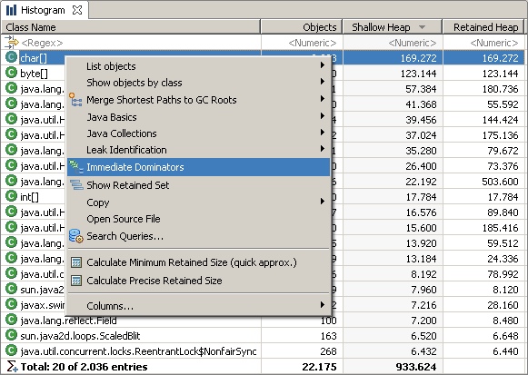

This query finds and aggregates all objects dominating a given set of objects on class level. It is very useful to quickly find out who is responsible for a set of objects, as it directly answers the question "who keeps these objects alive" instead of answering "who has a reference to these objects". Using the fact that every object has just one immediate dominator (unlike multiple incoming references) the tool offers possibility to filter "uninteresting" dominators (e.g. java.* classes) and directly see the responsible application classes.
Choice of options:
- Selecting entries and using the context menu

- The toolbar command starts a wizard to select an object set.

The immediate dominators of all char arrays are all objects responsible for keeping the char[] alive. The result will contain most likely java.lang.String objects. If you add the skip pattern java.* , and you will see the non-JDK classes responsible for the char arrays.